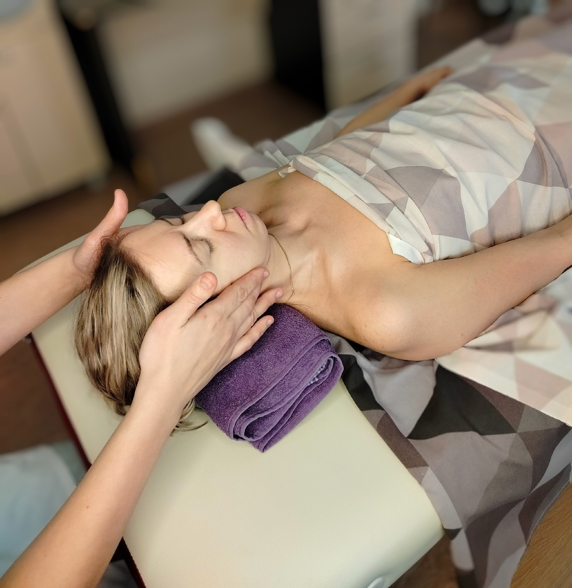
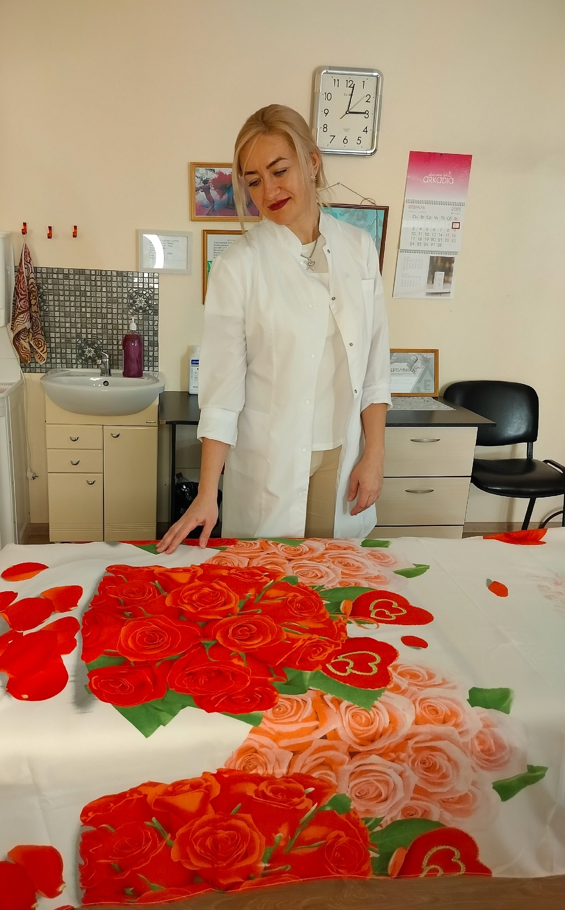
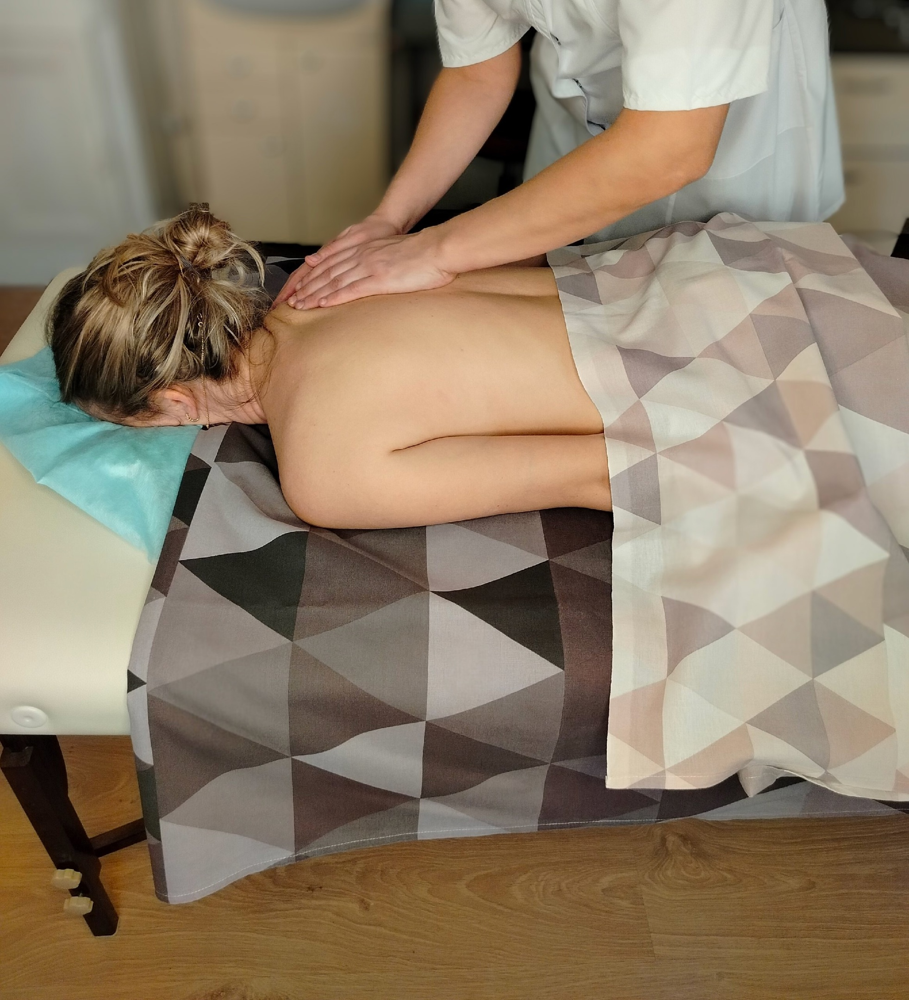
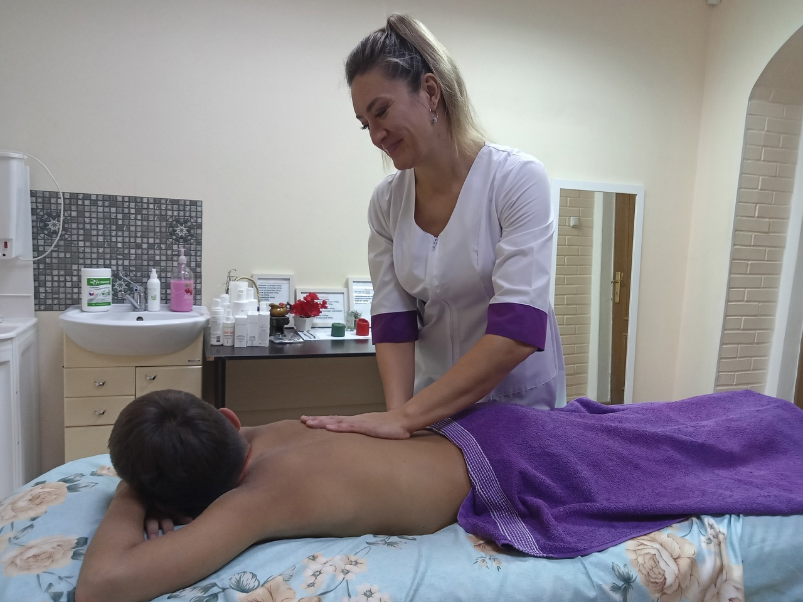

Анна Андреева - массажист из Сыктывкара. В 2022 году она арендовала кабинет и столкнулась с нехваткой клиентов. Доход был минимальным. В апреле 2023 года она заработала всего 15000 руб. Во время прохождения нашего курса ей удалось быстро наладить продажи через ВК, Уже через 2-3 недели после начала обучения она получила новых клиентов.
Мы взяли у нее короткое интервью:
— Расскажи, что было до курса, какой средний доход был в месяц? Сколько клиентов?
— Я начала арендовать кабинет в 2022 году и клиентов было очень мало, примерно по 1-2 человека в день и то не каждый день.
У меня даже записано за апрель 2023 год 15.000 рублей. Это кошмар(
— Согласна, кошмарнее некуда(
Какие сложности были во время обучения на курсе? Насколько сложно было учиться? За сколько прошла обучение?
— Было сложно создавать рекламу в вк кабинете. Было сложно вообще проходить курс, потому что не знала абсолютно как настраивать рекламу, что это такое ! Для меня это был темный лес! Спасибо, что курс был разжеван до мелочей, все по скринам со стрелочками. Поэтому если сильно захотеть, то можно все сделать.
Я очень долго проходила курс примерно 6 месяцев Было много работы.

— Ты большая молодец! А 6 месяцев это небольшой срок для достижения хороших целей)
Скажи, а примерно с какого момента на курсе ты начала совершать продажи? Принимать заказы из ВК?
— Примерно через 2-3 недели, даже не помню.
Когда чётко сформулировала для себя и клиентов их проблему и как я могу помочь ее решить. Начала зарабатывать примерно 60-65 тысяч в то время.
— Вау, круто) Ты ведь с куратором курс проходила? Каково было работать с куратором? Мотивировало быстрее двигаться?
— Я проходила с куратором 3 месяца, но затянула и вторую половину курса проходила самостоятельно, поэтому было потом тяжело . Лучше не затягивать и делать все с куратором

— Поняла, спасибо) Расскажи, какие сейчас действия делаешь для привлечения клиентов? Как часто пишешь посты? Запускаешь ли рекламу?
— Я пишу посты раза 2 в неделю и снимаю видео своей работы, рекламу пока не запускаю. У меня и так такой поток клиентов, хоть бы с этим справиться)
— Мега-крутышка) Может быть пора подумать о расширении))
А можешь поделиться, как изменилась жизнь, когда увеличился доход? Может что-то купила себе? Съездила в путешествие? Что-то смогла сделать, чего раньше не могла позволить себе)
— У меня план: дойти до 150тр. в месяц.
Потом повышение цен (я их в этом году не повышала)
Затем выйти на 180-200 т.р, а потом хочу взять 2 массажистов и обучить под себя.
А когда у тебя зп растет - это 100%увереность в себе и подтверждение того, что я супер специалист!

— С ноября 2023 по вот уже почти закончившийся декабрь 2024 – 726 000 рублей. Это примерно по 6-15 клиентов и по 55 000р в месяц, но несколько месяцев за это время я вообще ничего не плела и не продавала, устраивала себе полный отдых.
И да, конечно, ты права насчёт з/п и что обязательно нужна уверенность в том, что ты крутой специалист, чтобы повышать цены. А можешь сказать сколько сейчас средний доход у тебя в месяц? В цифрах? За последний год сколько вышло?

— Примерно 110-120 тысяч в месяц. За прошлый месяц 125 т.р. зарплата. Так держится у меня последних 3 месяца. С января по май этого года примерно 500 тысяч. А вот за прошлый год не скажу так вот точно) С августа по декабрь было примерно около 300 тыс.
Я очень очень-очень долго думала, покупать курс или нет. Тем самым откладывая поток клиентов, недозарабатывая и не зная как и где их брать. Теперь я безумно рада и горжусь собой. Всегда мечтала зарабатывать много денег
И приятно было получить твою обратную связь.
Желаю тебе вырасти в доходах за этот год минимум в 3 раза! Денежных и благодарных клиентов!